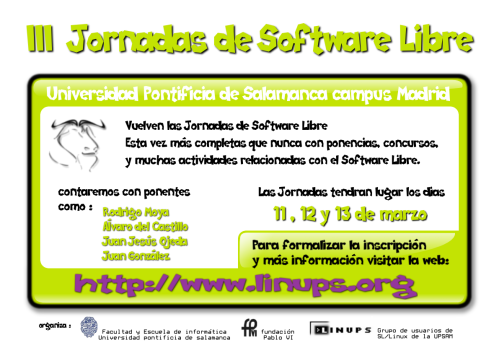
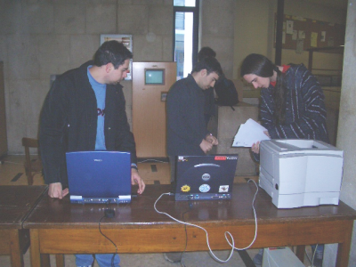
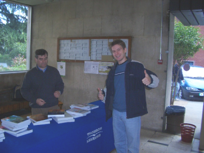
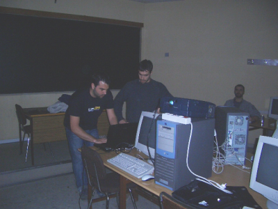
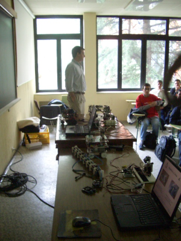
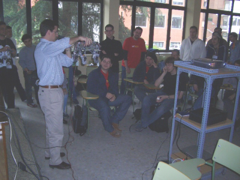
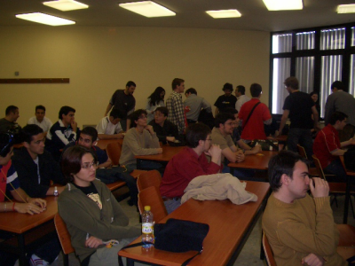
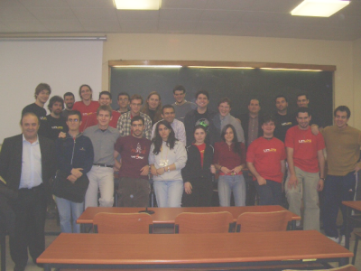

|
”Herramientas hardware y software para el desarrollo de aplicaciones con Microcontroladores PIC bajo plataformas GNU/Linux". UPSAM, Mayo 2004. |
|
 |
Título: “Herramientas hardware y software para el desarrollo de aplicaciones con Microcontroladores PIC bajo plataformas GNU/Linux”
Actividad: Exposición del artículo con el mismo nombre. Artículo disponible aquí.
Duración: 45 minutos
Evento: III Jornadas de Software Libre en la UPSAM.
Organiza: Grupo Linups: usuarios de Gnu/Linups de la Universidad Pontificia de Salamanca en Madrid
Lugar: Universidad Pontificia de Salamanca en Madrid. UPSAM.
Fecha: 7 de Mayo de 2004
Ponentes:
Los microcontroladores PIC están muy extendidos. Microchip, la empresa que los fabrica y distribuye, sólo ofrece herramientas de desarrollos para plataformas Windows. En este artículo describimos algunas de las herramientas libres que nos permiten trabajar con ellos desde GNU/Linux y presentamos la arquitectura del grabador que hemos desarrollado, así como el software creado para realizar la descarga. Toda la información está publicada en la web. Se pueden encontrar todos los detalles en los enlaces que se indican.
|
Descargas |
|
pres-pic-linux.sxi (1,4 MB) |
Presentación para OpenOffice 1.1.3 |
|
pres-pic-linux.pdf (850KB) |
Presentación en PDF |
|
piclinux.pdf (185KB) |
Artículo en PDF |
|
pic-linux.tgz (280KB) |
Fuentes del artículo para Lyx (Dibujos en Xfig) |
Se condecen permisos para usar, modificar y/o distribuir esta presentación, siempre que se mantenga esta nota.
Artículo completo: [PDF] [HTML] [Más información]
Tarjeta Skypic. Entrenadora para Microcontroladores PIC
Tarjetas PICMIN y PICUPSAM. Entrenadoras mínimas para el PIC.
Cuaderno técnico 4: Grabación de microcontroladores PIC
Servidor PICP. Stargate de grabación de PICs
Skypic-down. Cliente para la grabación de PICs desde Linux
Las III Jornadas de Software Libre se iban a celebrar los días 11, 12 y 13 de Marzo, pero debido al lamentable atentado del 11-M se suspendieron hasta los días 7 y 8 de Mayo.
Lo que más me gusta de este tipo de jornadas es que nos volvemos a reunir todos y puedes hablar con gente que hace mucho que no ves. También puedes conocer a mucha gente nueva.
|
 |
 |
Uno de los ponentes fue Juan Jesus Ojeda, del proyecto Metadistros. Ya nos conocíamos de haber coincidido en los cursos de verano sobre Linux, organizados por la UAM, en el VI Congreso de Hispalinux y por supuesto a través de la lista de Metadistros. Tuve la oportunidad de hablar más tiempo con él y luego tomarnos unas cervecitas. En la foto de la izquierda lo vemos junto a Carlos García (Kal).
La charla sobre Microcontroaldores PIC fue por la mañana, pero no dispongo de fotos :-(. La charla sobre Robótica y Linux la dimos Andrés y yo. Es ya un “clásico” de las Jornadas de software libre. En ella mostramos muchos robots controlados desde Linux y hacemos demostraciones. En la foto de la derecha se puede ver a Andrés junto al despliegue robótico.
|
 |
 |
En la foto de la izquierda, Andrés está enseñando a PuchoBot, el robot cuadrúpedo. Después de esta charla, se celebró la Mesa redonda “Software Libre y Universidad” a la que también me invitaron. En ella estuvo Vicente Matellán, entre otros.
|
 |
 |
...Y para finalizar la foto de familia :-)
|
 |
Al grupo LINUPS por invitarme un año más a las jornadas. ¡Muchas gracias!
18/Mayo/2005: Publicada información en esta web. Con mucho retraso, lo sé ;-)